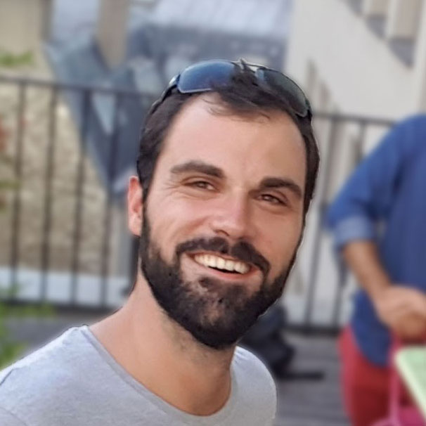

Stan Chollet
Passionate about travel, public speaking, software engineering and running.
Founder of Orléans Tech and Gazr Open-source project
Lead the Tartiflette.io project, GraphQL implementation built with Python.
Engineering Manager (Chapter Lead) Core API at @dailymotionEng